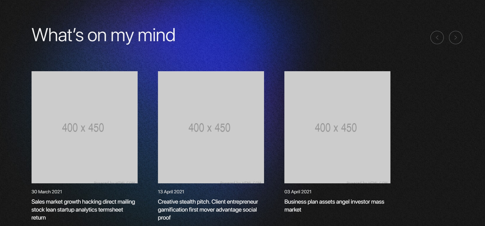
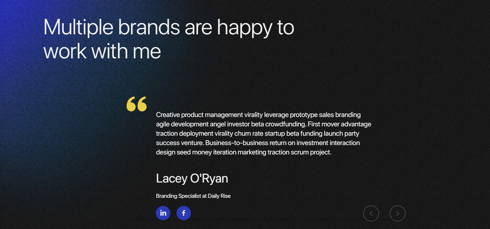

Design to attract, convert and
delight your customers
The structure of the Lewis HTML template:
Swiper slider works with Swiper jQuery plugin. It's easy to customize, see documentation


Homepage works with jQuery PagePiling plugin
Modals work with the fancybox plugin It is easy to configure, see the documentation